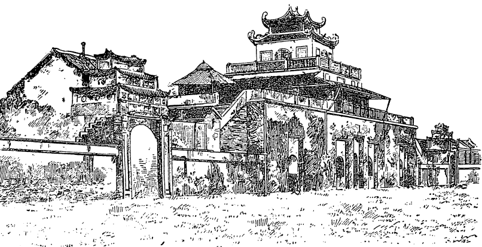

THÀNH HANOI
Thành kiến của người đời đối với Hồ Quý Ly thật là nặng nề.
Đồng thời với ông, thì phe quí tộc xem ông là kẻ thù nghịch, chực giết ông bất cứ giờ phút nào vì ông được Nghệ Tông, lúc làm vua cũng như suốt đời làm Thái Thượng Hoàng, triệt để tin dùng. Dầu ông vào sanh ra tử, đục pháo xông tên, đem hết tinh thần trí lực làm việc ngày đêm, đưa ra những chương trình, kế hoạch vĩ đại cải cách quốc gia, nhưng từ vua đến hoàng thân quốc thích đều cho rằng ông là gian thần, tìm đủ cách để diệt trừ.
Sử không nói rõ ý định đoạt ngôi nhà Trần được thai nghén từ lúc nào trong đầu óc Quí Ly, nhưng sử chép rõ ràng Đế Hiến vừa ngồi vững trên ngai vàng, thì tháng tám năm Mậu Thìn đã bàn với các cận thần giết Quí Ly. Nếu không được thượng hoàng Nghệ Tông cứu thì Quí Ly đã không toàn mạng.
Và suốt cuộc đời chánh trị, luôn luôn Quí Ly bị những kẻ thế lực đồng thời ganh ghét và mưu toan hãm hại, tâm chí và tài ba lỗi lạc của ông không được ai hiểu cả, có chăng chỉ một mình Nghệ Tông?
Học sinh các lớp Trung Học từ mấy mươi năm nay đều có học truyện TRINH THỬ. Người ta cho rằng tác giả truyện này là một người đồng thời với Hồ Quí Ly. Ông Hoa Bằng Hoàng Thúc Trâm viết rằng 5 : Theo như chỗ để ở ngoài bìa các bản in cũ thì tác giả truyện này là: « TRẦN TRIỀU XỬ SĨ HỒ HUYỀN QUI » nội dung truyện có ý ám chỉ vào việc Hồ Quí Ly là tay gian tà, chỉ chực kéo người trung trinh vào bè đảng để gây lấy vây cánh làm lợi cho mình.
Nếu tác giả là người đồng thời, thì ta thử xem một nhà trí thức triều Trần nghĩ thế nào về ông « Thủ tướng » Hồ Quí Ly.
Truyện này gồm 850 câu, được xem là bản thơ nôm đầu tiên dùng tục ngữ ca dao làm văn liệu, tóm tắt như sau: 6
« Một con chuột bạch góa chồng, một hôm đi kiếm mồi bị con chó đuổi, phải chạy vào ẩn trong một cái hang. Chẳng may trong hang có một con chuột đực, nhân khi chuột cái đi vắng, buông lời chọc ghẹo, dùng hết lý lẽ để quyến rũ chuột bạch ; nhưng chuột bạch khẳng khái cự tuyệt và liều chết để giữ tròn trinh tiết.
« Giữa lúc ấy, chuột cái về. Chuột bạch sợ bị nghi oan, cố giải bày lòng ngay thẳng của mình, rồi ra về. Nhưng chuột cái vẫn ghen, gây gổ với chuột đực và đến nhà chuột bạch la mắng ầm ỉ. Bất đồ một con mèo chạy đến, chuột cái hoảng sợ, rơi xuống ao.
« Hồ sinh (tác giả) chứng kiến cảnh ấy, bèn đuổi mèo đi và vớt chuột cái, rồi lấy lời bày tỏ lòng trinh tiết của chuột bạch và khuyên nhủ chuột cái phải biết cư xử trong gia đình. »
Soạn giả quyển sách giáo khoa viết: « Thủ tướng Hồ Quí Ly được trình bày như một kẻ nịnh thần, vô ân tham lam, không được lòng dân mến phục:
« Làm người mang tính hồ nghi,
Thầy người « cốt ngạnh » 7 chẳng vì chẳng yêu.
Vẫy vùng ếch giếng tự kiêu,
Tham lam chẳng khác Lý Miêu đời Đường.
Bệ rồng gác phượng tấc gang,
Quên lòng khuyển mã, toan đường dong thân.
Nở làm đồ quốc, 8 hại dân,
Những phần ích kỷ nào phần ích ai? »
Như vậy, dưới mắt giới nho sĩ đời Trần mà « xử sĩ » Hồ Huyền Qui đại diện, Hồ Quí Ly là kẻ đa nghi, ghét kẻ trung thực, là ếch ngồi đáy giếng, tham lam, phản bội, sâu dân mọt nước, ích kỷ, vô ích cho xã hội! Nghĩa là một ông quan đầu triều tồi tệ, hèn mọn, thiển cận, bất tài!
Soạn giả quyển sách giáo khoa còn giải thích thêm và không bình luận rằng: Sau khi tỏ vẻ khinh bỉ Thủ tướng Hồ Quí Ly, nàng nói đến chủ nhà nàng (tức con chuột bạch) là Hồ sinh với giọng kính phục:
Sao bằng đình chủ thiếp nay,
Ba gian thảo xá tháng ngày tiêu dao.
Chẳng lo đuổi thỏ săn hươu,
Rồng con uốn khúc ở ao đợi thì.
Tác giả Trinh Thử tự xem là rồng và xem Hồ Quí Ly là kẻ xấu xa đê tiện, hiểu biết thiển cận như ếch ngồi đáy giếng!
Đó là hình bóng Hồ Quí Ly dưới mắt những kẻ đồng thời ông.
Gần hết các nhà viết sử, sử thần cũng như sử gia, đều xem Hồ Quí Ly là kẻ gian tà, nịnh thần cướp ngôi.
Cho đến học giả Trần Trọng Kim, tác giả Việt Nam Sử Lược, một quyển sử căn bản của môn Việt Sử ở các trường học từ mấy chục năm nay, cũng đã nhận xét thật gay gắt về Hồ Quí Ly 9 : « Nghệ Tông là ông vua rất tầm thường: chí khí đã không có, trí lực cũng kém hèn, để cho kẻ gian thần lừa đảo, ghết hại cả con cháu họ hàng, xa bỏ những kẻ trung thần nghĩa sĩ, cứ yêu dùng một Quí Ly, cho được quyền thế, đến nỗi làm xiêu đổ cơ nghiệp nhà Trần. »
Trong thiên khảo cứu NAM SỬ LIỆT TRUYỆN, đăng ở tạp chí NAM PHONG (Hà Nội) số I00, ông Lê Thúc Thông viết 10 : « Xem Quí Ly đương buổi Tây Lịch I4II, khi ấy các nước Âu Châu chưa đến trình độ bán khai mà nước ta đã có Quí Ly, bày đặt các việc, trước đã khêu đèn văn minh, phỏng Bá Kỳ chẳng đưa quân Minh về trở ngạnh để cho Quí Ly hết sức kinh lý giang sơn, trùng tân nhật nguyệt, nước ta hẳn kéo cờ văn minh, thủ xuất trước các nước ở Á Châu… »
Trong Việt Nam Cổ Văn Học Sử (do nhà Hàn Thuyên, Hà Nội xuất bản năm I942), ông Nguyễn Đổng Chi cũng viết:
« Tư tưởng và hành vi của nhà độc tài ấy có thể sánh với Vương An Thạch (I02I-I086) đời Tống bên Tàu. Vương cũng có một độ bài xích những lối học huấn hổ và chú sở của tiên nho, cùng là chủ trương những vấn đề cải lương Trung Quốc. Họ Hồ đã chịu mạnh cái tinh thần đó nên quyết tâm mở một lối thực học đi đôi với nền tảng quốc gia xã hội mong làm cường thịnh nước nhà. Người sau còn hơn người trước về chỗ chiếm lấy ngai vàng cho tiện bề hành động.
« Nhưng đáng tiếc cho chiếc ngai vàng chẳng bao lâu bị sụp đổ và lôi cuốn mọi thứ đi mất. Bàn tay phá hoại ấy chính là người Minh, nhưng một số đông người Việt Nam lấy cớ phục hồi nhà Trần mở đường đón giặc, họ phải chịu một phần trách nhiệm. »
TIN MỚI số I406 ra ngày 3I-I0-I944 trong bài ĐỌC SỬ, ông T.N cũng viết:
« Đọc Nam Sử, những cuộc cải tạo về chính trị, xã hội, học thuật không phải là ít, nhưng điều khiến cho chúng ta phải ngạc nhiên và nhớ tiếc hơn cả là chính sách táo bạo có thể coi như một cuộc cách mạng của họ Hồ vào cuối thế kỷ thập tứ và đầu thế kỷ thập ngũ.
« …Đem đối chiếu những chính sách của Hồ Quí Ly với lịch sử quốc tế thời bấy giờ và nhất là đem đối chiếu với hoàn cảnh Á Đông lúc ấy, cuộc cải cách kia thật là lớn lao về cả tinh thần lẫn phạm vi của nó.
« Cuộc cải cách ấy nếu được tiếp tục trong một thời gian khá lâu, tất phải đem dân tộc Việt Nam, một dân tộc lúc ấy thiếu tổ chức, đến một nước phú cường.
« Nhưng đem reo rắc vào một đám dân chúng chưa giác ngộ, những chủ trương không gặp được một sức hậu thuẫn đầy đủ cho nên trước một cuộc âm mưu của bọn Việt gian làm bung sung cho quân đội nhà Minh, sự nghiệp họ Hồ đã tan tác sau một cuộc cách mạng đau đớn.
« Dẫu rằng đến khi vận nước đã suy, không có điều này cũng điều nọ, tựa hồ người đã già không mắc bệnh nọ cũng mắc bệnh kia, nhưng cứ sự thực mà xét, thì cũng vì vua Nghệ Tông cho nên cơ nghiệp nhà Trần mới mất về tay Quí Ly ; mà cũng vì sự rối loạn ấy, cho nên giặc nhà Minh mới có cớ sang cướp phá nước Nam trong hai mươi năm trời. »
Lời bình trên đây có đúng hay không?
Bạn đọc đã có thể tự trả lời.
Tuy nhiên, quyển sử của học giả Trần Trọng Kim là quyển sử Việt duy nhất viết bằng tiếng Việt được dùng ở các trường học hồi tiền chiến, đã chi phối quan niệm về sử học của bao nhiêu triệu thanh thiếu niên, cho đến nỗi ngày nay, nước Việt Nam đã xem Hồ Quí Ly là một nhân vật lịch sử tồi tệ, không xứng đáng được gắn tên trên bất cứ một con đường hẻo lánh nào, dầu ở một tỉnh lẻ!
Nhưng không phải người Việt nào cũng nhìn Hồ Quí Ly với con mắt của Hồ Huyền Qui, Trần Trọng Kim.
Trong lúc thực dân Pháp còn ngự trị trên mảnh đất này, thì một thế hệ trẻ, trí thức thật sự, yêu nước thật sự, cấp tiến thật sự, thế hệ của những kẻ đã diễn tả những xúc động mãnh liệt trong lòng họ bằng những bài hát ca ngợi những chiến công oanh liệt của tiền nhân: sông BẠCH ĐẰNG, ẢI CHI LĂNG, và những bài KINH CẦU NGUYỆN, LÊN ĐƯỜNG, XẾP BÚT NGHIÊN, nhứt là bài TIẾNG GỌI SINH VIÊN (ngày nay đã trở thành quốc ca của Việt Nam Cộng Hòa) khơi động tiềm năng yêu giống nòi của một dân tộc bị trị I00 năm! Một thế hệ trẻ gồm những sinh viên của trường Đại Học Hà Nội khoảng I942, 43, 44, 45, đã liệng bỏ thành kiến lỗi thời và mạnh dạn tỏ thái độ công bằng đối với người xưa.
Chúng tôi xin mượn bài tường thuật buổi họp về VĂN CHƯƠNG và ÂM NHẠC của các sinh viên Hà Nội của ông Phạm Mạnh Phan, đăng trong tạp chí Tri Tân, số 89, ngày thứ năm I-4-I943, trang I2:
« Hồi 9 giờ sáng, hôm chủ nhựt 2I-3-I943, tất cả Hà thành thanh lịch và cao quí đã sốt sắng đáp tiếng gọi thiết tha của Tổng Hội Sinh Viên trường Đại Học Đông Dương mà tới dự rất đông buổi họp Văn chương và Âm nhạc do ủy ban diễn thuyết tổ chức.
« Trong Giảng đài, trông các khuôn mặt tuấn tú của các thanh niên tươi cười hớn hở, nhìn các khóe thu ba cười trong ánh sáng của các giai nhân kiều diễm ẩn mình trong những bộ y phục đượm vẻ diêm dúa, lộng lẫy, người ta thấy lộ ra vẻ hoan lạc của sông núi thiêng liêng trong cảnh trăm họ thái bình, người ta như lãng quên trong chốc lát cái vô định của ngày mai…
« …Đúng giờ đã định, bạn Dương Đức Hiền, Hội Trưởng « Tổng Hội Sinh Viên » đứng trước diễn đàn nghiêng mình chào quan khách, giữa lúc tiếng hoan hô nổi dậy khắp trường.
« Bằng những lời gọn gàng và đanh thép, bạn Hiền nói:
« Thưa các Ngài, người ta vẫn chê thanh niên không tín ngưỡng, không suy nghĩ, người ta vẫn kết án thanh niên hững hờ với non sông đất nước.
« Anh em tân học chúng tôi buổi nay muốn cải chánh những lời ấy mà thề rằng hết lòng tận tụy phụng sự quốc gia Nam Việt…
« Lời hứa của chúng tôi, cùng tương lai và hy vọng của đời chúng tôi hòa nhập với sự thịnh suy của giống nòi, chúng tôi mong hết thảy quốc dân ủng hộ mà thẳng tiến trên con đường đầy ánh sáng. » 11
« Dứt lời, một tràng pháo tay nổi lên rầm rộ hoan nghinh. Bạn Hiền lui vào để nhường cho Trưởng ban Âm nhạc chỉ huy các sinh viên và các nhạc sĩ ca bài hát chính thức của trường Cao đẳng: « Tiếng Gọi Sinh Viên » do các bạn Phước, Thiền, Tốt soạn.
« Giọng hát của mấy nghìn sinh viên hòa nhịp với những tiếng tơ đồng khi bỗng, khi trầm, đã vang động trong giảng đài làm cho các thính giả như nô nức, như phấn khởi.
« Sau khi một sinh viên khác đứng ra giới thiệu các ban của tổng hội, như ban thanh niên, thể dục, khánh tiết, vệ sinh và tân y học, âm nhạc, luật học và các ban khác, bạn Vũ Đình Liên 12 , sinh viên trường luật, bắt đầu nói chuyện về lịch sử, nhan đề câu chuyện là « NGOẢNH LẠI GIANG SƠN ».
« Thoạt đầu, bạn Liên giải thích một danh từ mới thịnh hành có thể cắt nghĩa nguyên nhân cuộc chiến tranh hiện thời 13 là 2 chữ « espace vital » (khu vực sinh tồn).
« Rồi bạn nói đến ý nghĩa cuộc họp mặt buổi nay muốn cùng các thính giả lần giở trang lịch sử oanh liệt của tiền nhân mà trầm ngâm với quá khứ mà suy nghĩ với tương lai sao cho xứng với tiên tổ đã tốn công gìn giữ non sông gấm vóc.
« Cái tang chứng rõ rệt của dân tộc ta về quan niệm « khu vực sinh tồn » đã được diễn giả chứng thực bằng cuộc Nam tiến không ngừng của giống Lạc Hồng này trong bao thế kỷ.
« Nào từ khi vua Lê Đại Hành (980-I005) sau khi phá được quân nhà Tống đem quân sang đánh Chiêm Thành bắt người lấy của.
« Nào lúc vua Lý Thánh Tông (I054-I072) diệt Lâm ấp khiến Chế Củ bị bắt phải xin dâng ba châu Địa Lý, Ma Linh và Bố Chính để chuộc tội.
« Nào lúc vua Trần Anh Tôn (I293-I3I4) nhận hai châu Ô và Lý của Chế Mân dâng làm lễ cưới Huyền Trân công chúa (I307).
« Với lúc HỒ QUÍ LY (I400) ĐÁNH BẠI VUA CHIÊM THÀNH LÀ BA ĐÍCH BẮT DÂNG CHIÊM ĐỘNG VÀ CỔ LỦY. Lê Thánh Tông (I460-I497) đánh Trà Toàn ở Đồ Bàn và Thị Nại (I470).
« Cho tới lúc chúa Nguyễn Phúc Chu đánh lấy đất Phan Rang và Phan Rí mới diệt hẳn Chiêm Thành sau 6 thế kỷ mà nhập vào bản đồ Nam Việt.
« Nào công nghiệp nhà Nguyễn thôn tính Thủy Chân Lạp (I759) mà lập 6 tỉnh Nam kỳ. Nào cuộc bảo hộ ở Cao Miên, nào việc Tổng Trấn Thành Gia Định Lê Văn Duyệt dùng hơn vạn hùng binh (I8I3) đưa vua Tiêm La về nước.
« Việc là việc cũ, diễn giả kết luận, nhưng đã cũ nên ai cũng cần phải nhớ, nay ta ôn lại để nhắc nhở công nghiệp người xưa đã từng tắm gội máu của kẻ thù để ghi nhớ những chiến công của các bậc đại anh hùng để khỏi quên những chiến sĩ đã vui lòng hi sinh tính mệnh cho quốc gia mà đã từng đem máu mình nhuộm đỏ cả giòng sông của đất nước hoặc đã từng chôn vùi thân thế bên các sườn núi cheo leo (tiếng vỗ tay hoan hô).
« Sau cuộc nói chuyện của bạn Vũ Đình Liên đến cuộc hát và âm nhạc: các bản đàn KINH CẦU NGUYỆN, SÔNG BẠCH ĐẰNG và ẢI CHI LĂNG với những điệu rất mới, hùng hồn và oai nghiêm dễ quyến rũ các thính giả.
« Nhất là bản đàn Ải Chi Lăng, điểm thêm tiếng cồng đã được hoan nghinh nhiệt liệt. Khi nhè nhẹ người ta nghe tưởng chừng như thoáng thấy tiếng rền rĩ của các oan hồn, lúc mau gấp như cảm thấy tiếng xô xát của gươm đao thuở trước nơi chiến địa. »
Và ông Phạm Mạnh Phan kết thúc bài báo:
« Ra về, tôi có một cảm tưởng hoan lạc về buổi họp tao nhã đó.
« Trong hơn hai tiếng đồng hồ, tôi đã được cùng mấy nghìn thính giả ôn lại cuộc Nam tiến mãnh liệt của dân tộc ta khi trước, đã được nhắc nhở lại những chiến công oanh liệt của các bậc đại anh hùng nơi đất nước.
« Óc tôi không khỏi hoài niệm tới những tổ tiên chí khí hiên ngang đã từng nặng lòng hi sinh thân thế cho giang sơn tổ quốc mà gìn giữ bờ cõi gấm vóc của giống nòi. »
Với lớp người trẻ thấm nhuần tư tưởng cách mạng quốc gia ấy, Hồ Quí Ly không còn là một gian thần soán nghịch nữa, mà được đồng hóa với những vị anh hùng khai sơn phá thạch, tuân theo nhu cầu cần thiết của dân tộc mà mở cuộc Nam tiến nguy hiểm gian lao để mở rộng giang sơn, « khu vực sinh tồn » của giống nòi.
Buổi họp mặt tại giảng đường trường Đại Học Hà Nội đã mở đầu giai đoạn I đấu tranh của lớp người trẻ, giai đoạn huy động tinh thần yêu nước của dân tộc bằng cách gợi lại công nghiệp oai hùng của tiền nhân qua những cuộc nói chuyện hay qua âm nhạc – đã lẫn lộn hẳn với nguồn gốc tân nhạc Việt Nam. Qua giai đoạn này ; họ đã tích cực hoạt động bằng cách tổ chức những buổi nói chuyện và trình diễn nhạc kịch ở nhiều tỉnh ngoài Bắc, trong Nam, và những trại hè vĩ đại như trại Tương Mai (ngoài Bắc), trại suối Lồ Ồ (trong Nam). Còn đi xa hơn nữa, trong những buổi lửa trại mà trẻ trung xen lẫn uy nghiêm, Ông Quách Vũ, tức Quách Vĩnh Chương, sinh viên luật khoa đã nói chuyện riêng về Hồ Quí Ly. Họ Hồ đã được xem như là một nhà cách mạng, một vị anh hùng, một nhà bác học, một chánh trị gia, một nhà kinh tế tài chánh xuất sắc nhứt ở cuối thế kỷ I4, đầu thế kỷ I5. Bài nói chuyện đó đã được đăng trong tuần báo THANH NIÊN ở Saigon do ông Huỳnh Tấn Phát, kiến trúc sư, làm chủ nhiệm vào năm I944.
Trong phong trào văn chương « ôn cố như tri tân » tại Việt Nam trong những năm thế chiến, nhà văn Chu Thiên, tác giả những quyển tiểu thuyết về lề lối thi cử và giới nho sĩ ngày xưa: BÚT NGHIÊN, NHÀ NHO, có viết một quyển biên khảo rất đầy đủ về Hồ Quí Ly, và đã nhìn họ Hồ dưới con mắt của một nhà sử học khách quan chớ không thiển cận, hẹp lượng như đa số những người viết sử trước. Rất tiếc, quyển này hiện nay không còn trên thị trường nữa.
Gần đây, trong quyển VIỆT SỬ TÂN BIÊN, một bộ sử rất có giá trị đương thời, ông Phạm Văn Sơn đã chép rất kỹ lưỡng về Hồ Quí Ly và đã phát biểu những quan niệm mới và công bình về người lịch sử này, khác hẳn những luận điệu sai lầm, nông nổi, đầy thành kiến bất công mà các nhà chép sử trước kia đã gieo rắc một cách tai hại vào đầu óc hậu thế khi đề cập tới Hồ Quý Ly.
Sử quan của hậu thế đang đi trên chiều hướng hợp lý.